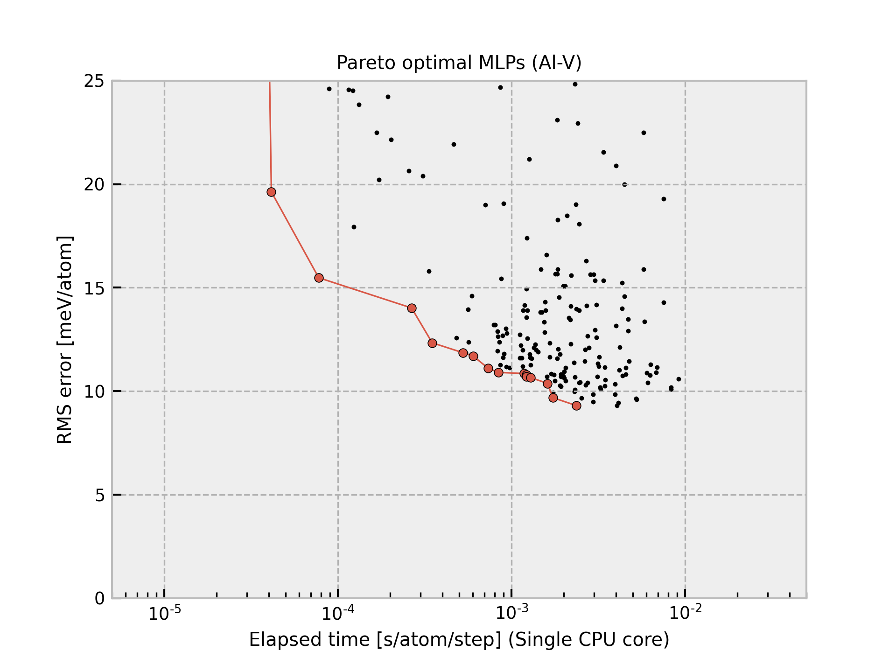

Cr-2020-05-28-dataset-3000-common6¶
{kind=link}
The current structure dataset is composed of 3,000 structures generated from six simple structures (FCC, BCC, HCP, simple cubic, omega, beta-Sn types). A more detailed procedure is found in J. Chem. Phys. 148, 234106 (2018). The procedure to estimate interatomic potentials from the dataset is found in Phys. Rev. B 99, 214108 (2019) and Phys. Rev. B 102, 174104 (2020).
All Pareto optimal MLPs are available
here.
Name |
Time [ms] (1 core / 36 cores) |
RMSE [meV/atom] / [eV/ang.] |
|---|---|---|
pair-1 |
0.014 / 0.005 |
108.38 / 0.2893 |
pair-15 |
0.014 / 0.005 |
82.264 / 0.2125 |
pair-16 |
0.021 / 0.007 |
68.671 / 0.1999 |
pair-22 |
0.023 / 0.008 |
25.261 / 0.1706 |
pair-43 |
0.035 / 0.006 |
19.912 / 0.1600 |
pair-50 |
0.052 / 0.007 |
18.279 / 0.1571 |
pair-44 |
0.052 / 0.012 |
15.007 / 0.1456 |
pair-51 |
0.077 / 0.009 |
13.334 / 0.1426 |
gtinv-354 |
0.224 / 0.022 |
13.268 / 0.1374 |
gtinv-460 |
0.224 / 0.022 |
12.177 / 0.1351 |
gtinv-110 |
0.607 / 0.038 |
11.803 / 0.1281 |
gtinv-214 |
0.608 / 0.038 |
11.003 / 0.1229 |
gtinv-159 |
0.659 / 0.040 |
9.0901 / 0.1022 |
gtinv-215 |
0.662 / 0.046 |
7.1860 / 0.0859 |
gtinv-111 |
0.664 / 0.039 |
7.1677 / 0.0900 |
gtinv-216 |
0.732 / 0.042 |
6.7617 / 0.0833 |
gtinv-331 |
0.805 / 0.048 |
5.5359 / 0.0818 |
gtinv-428 |
0.909 / 0.051 |
5.3145 / 0.0751 |
gtinv-351 |
0.948 / 0.055 |
5.0108 / 0.0799 |
gtinv-456 |
1.083 / 0.061 |
4.9799 / 0.0732 |
gtinv-336 |
1.845 / 0.093 |
4.7087 / 0.0810 |
gtinv-434 |
1.846 / 0.093 |
4.5979 / 0.0797 |
gtinv-435 |
1.949 / 0.098 |
4.2561 / 0.0757 |
gtinv-356 |
2.165 / 0.116 |
4.2008 / 0.0754 |
gtinv-462 |
2.171 / 0.111 |
3.9893 / 0.0744 |
gtinv-463 |
2.309 / 0.119 |
3.6304 / 0.0697 |
gtinv-470 |
4.024 / 0.192 |
3.4719 / 0.0717 |
gtinv-338 |
5.890 / 0.263 |
3.2991 / 0.0670 |
gtinv-437 |
5.911 / 0.262 |
3.2759 / 0.0664 |
gtinv-438 |
6.036 / 0.274 |
3.1036 / 0.0635 |
gtinv-410 |
6.972 / 0.311 |
3.0754 / 0.0661 |
gtinv-466 |
6.986 / 0.314 |
2.9771 / 0.0599 |
gtinv-473 |
12.645 / 0.583 |
2.7728 / 0.0612 |
Column “Time” shows the time required to compute the energy and forces for 1 MD step and 1 atom, which is estimated from a simulation of 10 runs for a structure with 284 atoms using a workstation with Intel(R) Xeon(R) CPU E5-2695 v4 @ 2.10GHz. Note that the MLPs should be carefully used for extreme structures. The MLPs often return meaningless values for them.